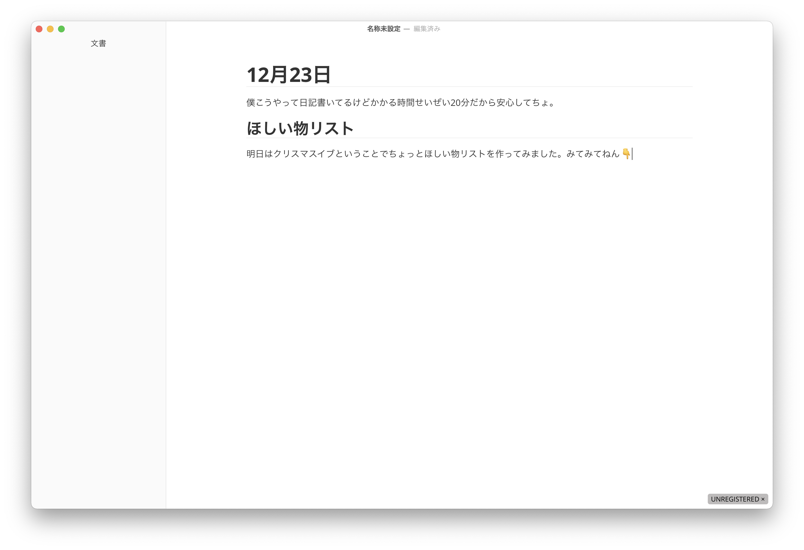
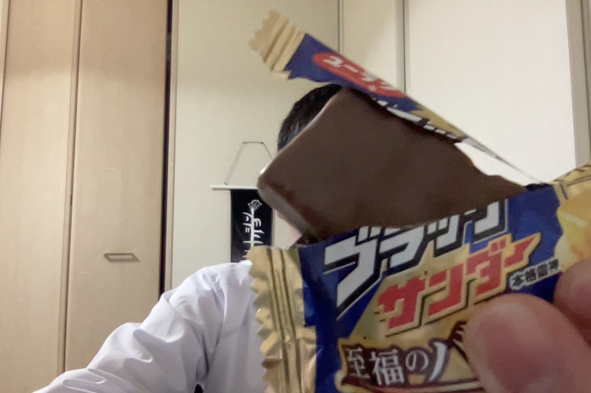

12月23日
僕こうやって日記書いてるけどかかる時間せいぜい20分だから安心してちょ。
ほしい物リスト
明日はクリスマスイブということでちょっとほしい物リストを作ってみました。みてみてねん👇
1. Typora
そもそもTyporaとは何かっていう話なんだけど、マークダウン編集ソフト。まぁマークダウンしか勝たんな人にはめちゃくちゃ神ってるアプリ。ライブエディテイングができるんよ。何言ってるかわからない人は百聞は一見に如かずでウェブサイト見に行った方がいい。
HTML出力もコピペの勢いでできるのでめちゃくちゃ便利だった。
そう。だったんだよ。
結構最近までベータ版で無料で使えてたのに、有料版になってしまって、フォおおお！てなわけで買いたいんです。
値段見ると、$14.99だったから、1800円あれば買えそう。多分。知らんwとにかく自費でもいいからこの神アプリを使い続けるためにも買いたいでごわす。
2. Loopback

これも神アプリだった。だった。うん。フリートライアルで一目惚れしてずっと買えてないんですよねーこのアプリ。何ができるかっていうと、オーディオのルーティングができる。例えばスピーカーAではSpotifyで曲を流して、スピーカーBでは通話の音声を流すとか。あとQuicktimeの録画での音声を拾えるようになるとか。めちゃくちゃGUIもわかりやすくて好きだった。
値段結構高かった気がする。$108.90らしいから、切り上げで13000円かぁ。たけぇなぁって感じ。うーん。悩みどころですね。
3. Magic Mouse

僕諸事情によりHHKBをいただいたんだけど、使ってるのノートPCだからあんま使い道がないわけ。ただインスタのPCセットアップ見てて、ノートをデスクトップとして使ってる人に憧れて、Macbookの前にHHKB置いて使うようになったんだけど、カーソル操作のためにいちいち腕を伸ばしてトラックパッドを動かすのめんどい！ってなるわけですよ。うん。だからワイヤレスマウスが欲しい！って今なってるの。まぁApple信者のつもりだからMagic Mouseかなぁってところ。
まぁ値段は高いけど、これはマジで欲しいなぁ
うーんもうちょい頭の中で思いついていたはずなのに、いざ書き出してみると忘れてしまうもんなんだなぁと。覚えてたら更新しとこっと。
今日の写真
ブラックサンダーがばりうまい。これは豊橋土産。豊橋なんだってブラックサンダーの本社って。